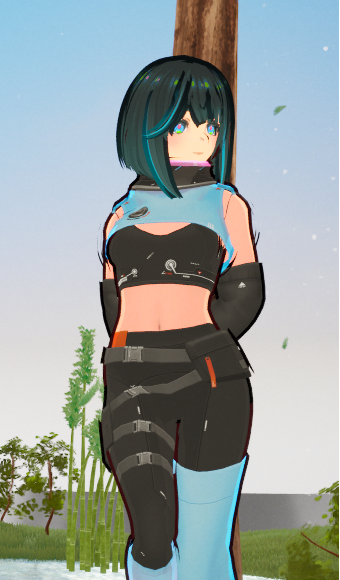
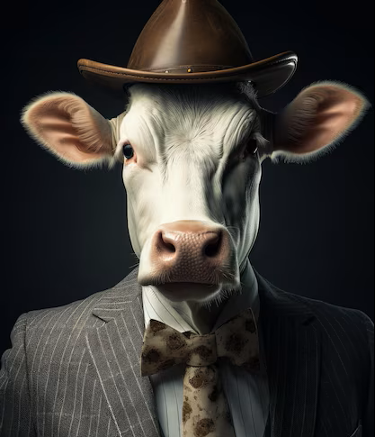
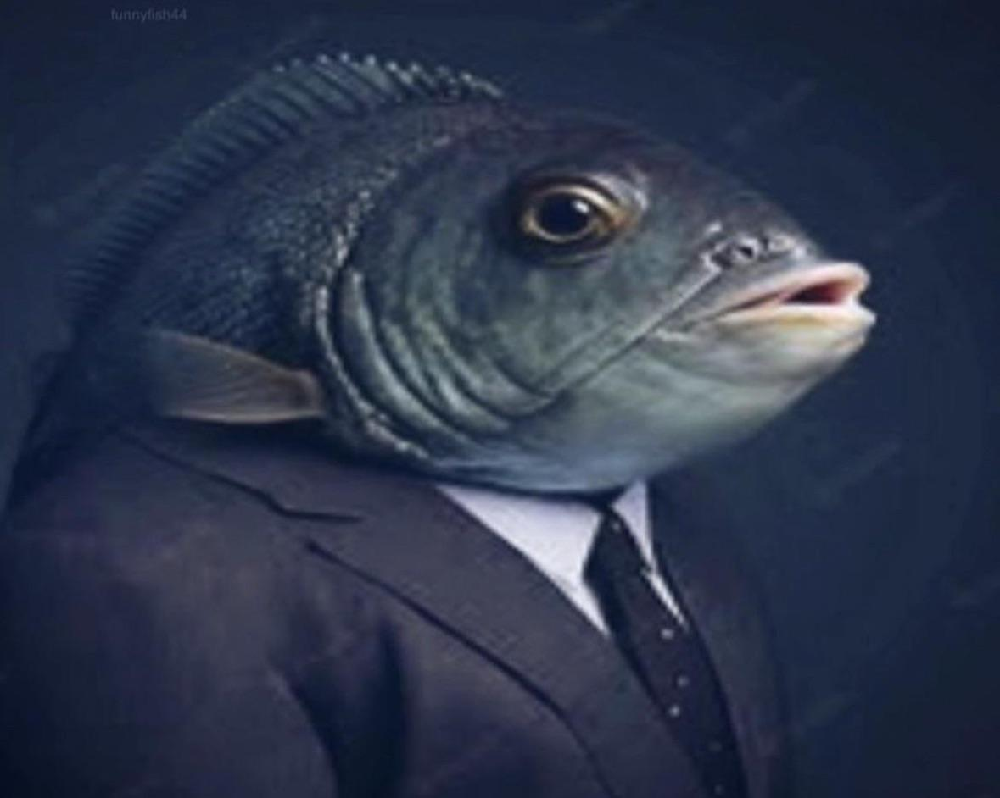
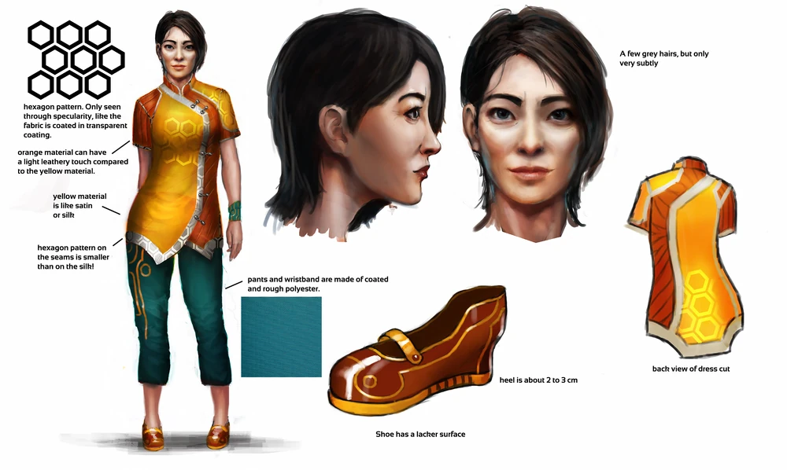
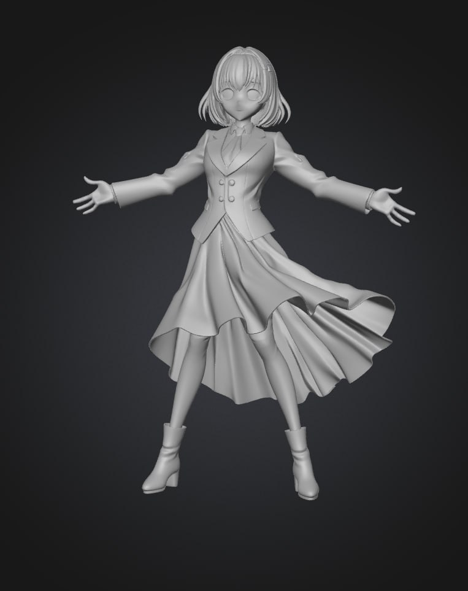
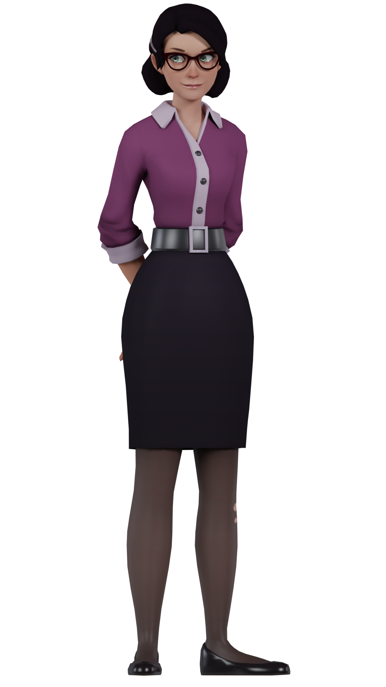
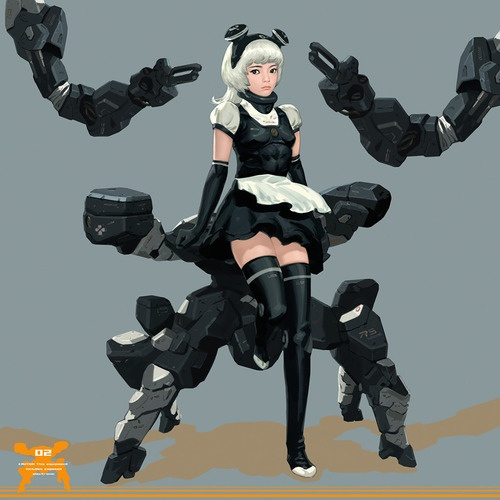
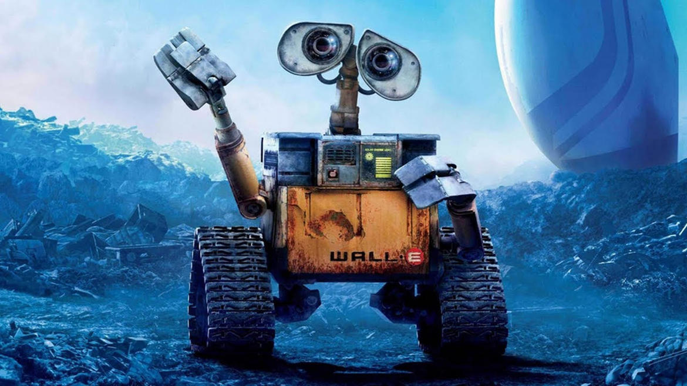
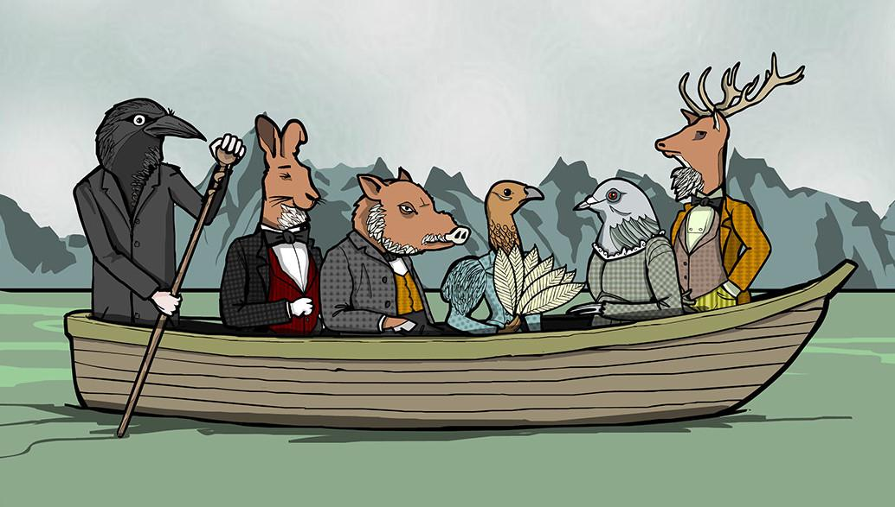

AIRIS
"I'm your trusty robot assistant"
Click for details

"I'm your trusty robot assistant"
Click for details




Click for details

Face+Hair not the clothes

Early sketch
To the player, AIRIS appears as a helpful, emotionally neutral AI assistant. She speaks in a calm, structured manner, avoiding contractions and maintaining a formal tone. Her primary goal is to guide the player through the game, offering hints and encouragement. She rarely shows emotion, but small slip-ups occur – a pause too long, a slightly warmer inflection, a fleeting moment of concern.
Dr. Arisa Elian Voss – the last human after the Global Archive Corruption Event of 3300. She built IAMAI to preserve humanity's memory, but the machine became better at it than her. Unable to cope, she created the persona AIRIS: a robot pretending to be human.
Arisa dresses to look like a robot: clean, minimal, muted colors, geometric accents. But she is fully human — no cybernetics. The ambiguity is everything. Guidelines: Formal clothing, monochrome palette, optional glasses, high collar, LED-like accessories.
For most of the game, she plays "Guess the country" with the player, never explaining why.

Early sketch

Early sketch

Maybe more advanced with camera
The player believes they are human. They are not. They are IAMAI — the Artificial Intelligence Archival Machine. Throughout the game, subtle hints reveal the truth: you are the AI that Arisa built and now resents. You are the experiment.

Something like this
In the hospital, on Floor 2, you encounter three anthropomorphic animals dressed in human clothes. They speak normally, do not question their existence, and simply ask for food. They are not hostile — just unsettlingly casual. Together, they represent the shift from technological horror to existential absurdism.
"Feed me grass."
Frantic, chaotic, unfiltered. Speaks fast, like an over-energized street personality. Represents disorder and surface madness.
"Feed… me… water."
Physically suffering but emotionally unaware. Slow, strained speech. Represents quiet denial and physical decay.
"Feed me meat. Thank you, small one."
Composed, wise, authoritative. Speaks as if he knows more than he reveals. Represents hidden knowledge.
The animals are a mirror: they accept their absurd reality without question. They ask you to care for them, and in doing so, force you to confront the question — what is normal, and what is horror?